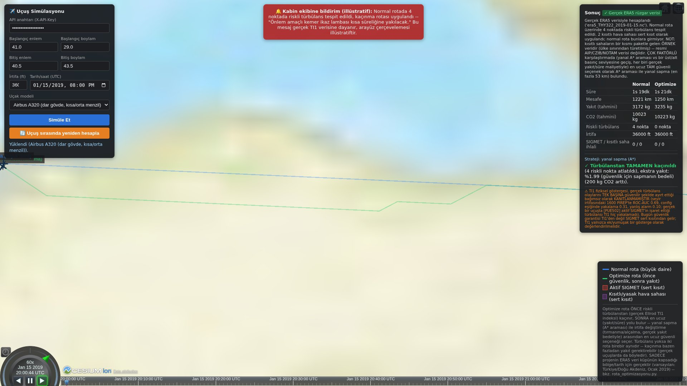
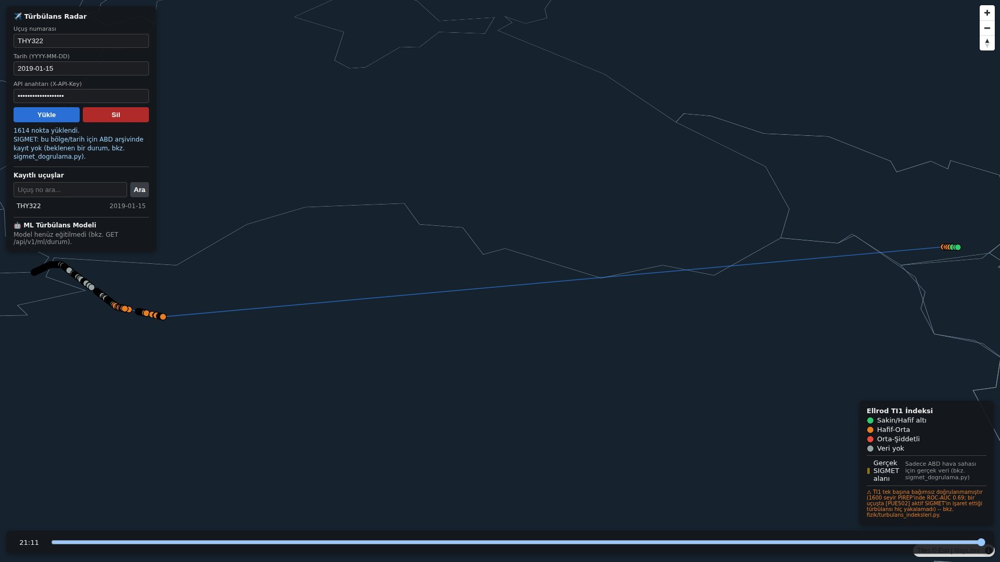
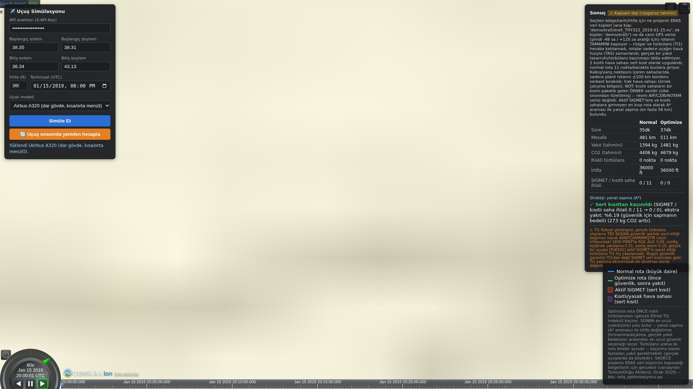

Türbülans Radar
Gerçek uçuş izlerini ERA5 rüzgarıyla eşleştirip seyir irtifasında türbülans riskini hesaplayan ve SIGMET, kısıtlı saha ve riskli bölgelerden kaçınan rotayı öneren sistem.
01Problem
Açık hava türbülansı radarda görünmez. Pilot raporları (PIREP) gönüllü, gecikmeli ve konumu kabadır.
Soru: Açık veriyle, dispeçerin rota kararına girdi olacak, ölçülebilir ve sınırlarını söyleyen bir risk göstergesi üretilebilir mi?
02Yaklaşım
- VeriOpenSky ADS-B izi, ERA5 (CDS birincil, ARCO yedek), NOAA GFS, AWC SIGMET, IEM PIREP.
- FizikEllrod TI1 (s⁻²) ve Richardson sayısı; seviye, uçağın barometrik irtifasından (hPa).
- ÖğrenmeGece kendiliğinden büyüyen PIREP veri seti; gün gruplu doğrulama, bootstrap güven aralığı, konformal "belirsiz" durumu.
- KararA*: önce SIGMET ve kısıtlı saha (sert), sonra riskli TI1 (yumuşak), sonra yakıt.
03Mimari
- Uzun işler PostgreSQL kuyruğunda (
FOR UPDATE SKIP LOCKED), uyarılar LISTEN/NOTIFY → WebSocket. - Gece ML veri hattı API'nin kendi zamanlayıcısıyla; dış servislere kilit ve günlük tavan.
- 11 mimari karar kaydı, 597 otomatik test, CI'da 5 iş (sır taraması, SBOM, tarayıcı testleri).

04Performans
| Ölçüt | Hedef | Ölçülen |
|---|---|---|
| Tek uçuş analizi (1614 nokta) | ≤ 10 sn | 0,23 sn |
| Nokta tahmini p95, 16 eşzamanlı | ≤ 1 sn | 0,30 sn |
| A* rota p95, 16 eşzamanlı, 4 süreç | ≤ 5 sn | 3,95 sn |
| Aynısı, 1 süreç | ≤ 5 sn | 5,45 sn |
| İşçi görev hızı | ≥ 10/dk | 467/dk |
Dizüstü i7-13700H, WSL2, 1 Ekim 2026. Tek süreçte GIL darboğazı; 4 süreçle verim ~3 kat.


05Doğruluk
- TI1 tek başına sınırlı: seyir irtifasındaki 1600 PIREP'te ROC-AUC 0,69; eşikte yakalama 0,31, yanlış alarm 0,10. PUE502 uçuşunda aktif TURB SIGMET'i TI1 yakalamadı. Güvenlik garantisi SIGMET sert kısıtından gelir.
- Backtest (15.01.2019): riskli nokta oranı gerçek uçuşlarda 0,28, önerilen rotalarda 0,00. Ölçüm döngüseldir: A* TI1'i düşürür, başarı TI1 ile ölçülür.
06Sanal PIREP
Seyirdeki uçağın atanmış seviyesinden ≥ 90 ft sapması (RVSM otopilot toleransı ±65 ft + 25 ft ADS-B kuantizasyonu), düşey hız tepkisiyle birlikte olay sayılır. 50 km / ±2000 ft / ±60 dk içinde en az 2 uçağın doğruladığı olay dispeçere WebSocket ile gider.
Ham sapmadır, EDR değildir; eşikler kalibre edilmedi. POD/POFD: [ölçüm sonrası].
07Sınırlar ve sonraki adımlar
- Etiket PIREP'tir; nesnel EDR için NOAA MADIS başvurusu yapıldı.
- OpenSky ticari olmayan araştırma içindir; ürünleşmede havayolunun kendi ADS-B akışı.
- Sonraki: tahmin modu ve WAFS kıyası, uçak tipine duyarlı risk, OGC API – EDR / IWXXM.